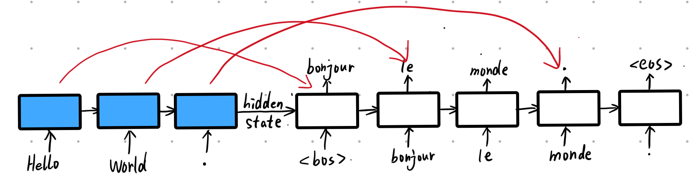
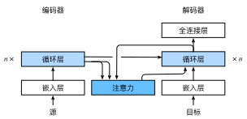
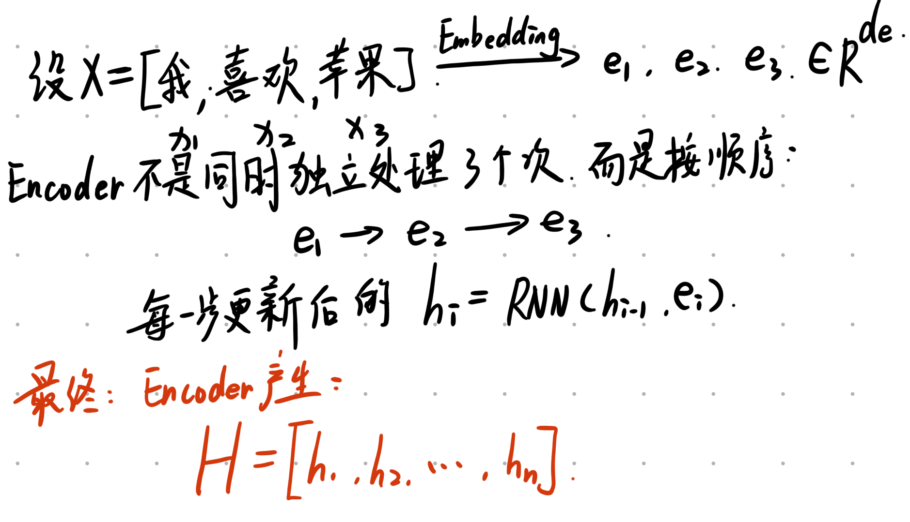
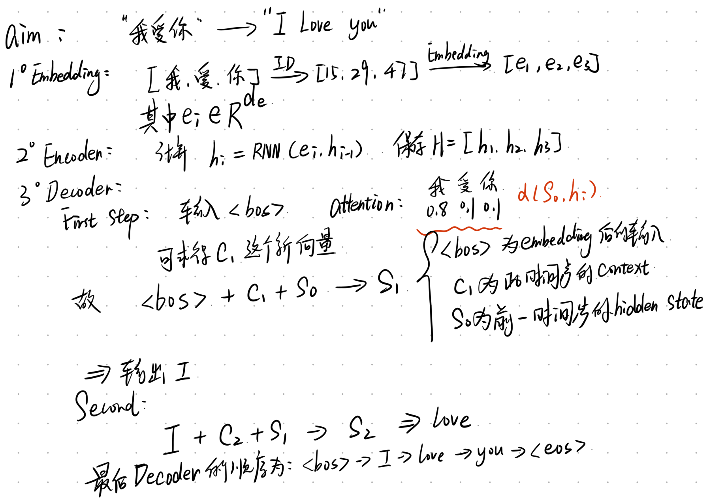
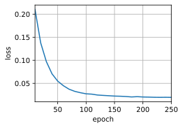
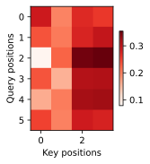

代码
import torch
from torch import nn
from d2l import torch as d2l2026年8月19日
我们先初步回忆一下机器翻译问题：通过设计一个基于两个循环神经网络的编码器-解码器架构，用于序列到序列学习。具体来说，循环神经网络编码器将长度可变的序列转换为固定形状的上下文变量，然后循环神经网络解码器根据生成的词元和上下文变量按词元生成输出（目标）序列词元。
然而，即使并非所有输入（源）词元都对解码某个词元都有用， 在每个解码步骤中仍使用编码 相同 的上下文变量。 有什么方法能改变上下文变量呢？
1. Seq2Seq的缺陷
Encoder 一方面以 Decoder 输出 RNN 的 hidden state 作为 Decoder 的 RNN 初始化 hidden state；另一方面，Encoder 只把一个句子中的最后一个时刻（word）的最后一层的隐藏状态当做 context（上下文），与 Decoder 的 Input 之一 Embedding 进行拼接，作为 Decoder 的另一个输入。
但是最后一个时刻（word）的最后一层这一 context，尽管包含了之前的 time_step 的信息，但也是间接的信息，且失去了位置信息。
把最后一个时刻（word）的最后一层作为 context，是不合适的，因为从道理上讲，Encoder（源语言）和 Decoder（目标翻译语言）的位置最好一一对应，而不是统一拿 Encoder 的 RNN 的最后一个 time_step 的最后一层当做 Decoder 的 RNN 的输入的一部分。举个例子，在 Decoder 第一个位置预测 bonjour 的时候，不应该拿 Encoder 的最后一个位置的句号的输出作为 context，而是应该拿第一个位置的 hello 的输出作为 context。
如下图所示，其中蓝色部分为Encoder，白色部分为Decoder：
2. attention 改进
seq2seq 加入 Attention机制，则允许 seq2seq 修正这一缺陷。具体做法：\mathbf{c}_{t'} = \sum_{t=1}^T \alpha(\mathbf{s}_{t' - 1}, \mathbf{h}_t) \mathbf{h}_t。
其中，下标 t 为 Encoder 的下标，下标 t' 为Decoder的下标； h_t 为 Encoder 的 RNN 的 hidden state 输出，既是 key 又是 value； s_{t'-1} 为 t'-1 时刻 Decoder 的 hidden state输出；c_t' 为Decoder 在 t' 时刻的上下文（context）变量；s，h 和 c 都是向量；\alpha 函数是注意力权重函数。相当于原版的 seq2seq 的上下文变量 c，在任何解码时间步 t' 都会被 c_t' 替换，更加灵活。
具体来说，假设 Encoder 的 RNN 中，一个英文句子的长度（time_step）为 3，则有 3 对 key value pair（键值对），其中 key=value，第 i 个 key 或 value 就是第 i 个 word 的 RNN 的 hidden state 这一输出。把它们放入Attention中，此时 h_t = 第 t 个 key 或value。
与此同时，在 Decoder 的 RNN 中，对上一个词的 hidden state 输出就是 query，即 s_{t'-1} = query。之所以在 Decoder 使用 RNN 的输出，而不是 input 即 Embedding，是因为这样可以与 Encoder 的 RNN 的输出处于同一个语义空间，方便用 query 对 key value pair 进行查询。Attention 的结果 f(x) 即 c_t'，就能替代之前的 context（Encoder 最后一个时刻的最后一层的输出），与下一个词的 Embeding 进行 concat，作为 Decoder 的输入。
更加形象的解释： 原始的 seq2seq 只把 Encoder 的 RNN 最后一层的最后一个单词的输出拿出来作为 c，而加入 Attention 的 seq2seq 则把 Encoder 的 RNN 的最后一层的所有单词（key value pair）都拿出来，做一个加权平均处理，同时根据位置（Decoder 的 t'）的不同，一开始对 Encoder 中 t 偏小的词赋予更多权重，越往后则对 Encoder 中 t 偏大的词赋予更多权重。
3. 小tips
自己从零实现的 gru、lstm、rnn 和 pytorch 实现的不一样，在 pytorch 版本中是没有实现最后的输出层的，目的是为了让我们自定义输出层，跟我们从零实现的不一样。 所以：
output 形状为 (num_steps，batch_size，num_hiddens)，即每个时间步中最后一层的隐藏状态。（这里是指 Encoder 输出的结构）
state 形状为 (num_layers, batch_size, num_hiddens)，即最后一个时间步所有层的隐藏状态。
下面描述的Bahdanau注意力模型将遵循seq2seq中的相同符号表达。 这个新的基于注意力的模型与seq2seq中的模型相同， 只不过本模型中的上下文变量 \mathbf{c} 在任何解码时间步 t' 都会被 \mathbf{c}_{t'} 替换。 假设输入序列中有 T 个词元， 解码时间步 t' 的上下文变量是注意力集中的输出：
\mathbf{c}_{t'} = \sum_{t=1}^T \alpha(\mathbf{s}_{t' - 1}, \mathbf{h}_t) \mathbf{h}_t
其中，时间步 t' - 1 时的解码器隐状态 \mathbf{s}_{t' - 1} 是查询， 编码器隐状态 \mathbf{h}_t 既是键，也是值， 注意力权重 \alpha 是使用加性注意力打分函数计算的。
与循环神经网络编码器-解码器架构略有不同，下图描述了Bahdanau注意力的架构。
下面我们会详细解释一下这个模型
我们的文本输入进来，首先要变成Token，假如输入了”我|喜欢|苹果”，模型不能直接处理”我”“喜欢”“苹果”, 必须先转换成ID，例如根据词表中来设置，我们可以把[我, 喜欢, 苹果]变成例如[15, 38, 67]，也就是x_1=15,x_2=38,x_3=67，但是这些数字都只是编号，本身不具备语义。
我们还需要经过Embedding层，这个层会把一个整数ID映射到一个向量，例如15 \rightarrow [0.21, -0.83, 0.14,···]
我们假设Embedding维度有d_e大小，那么每个词都会变成e_i \in R^{256},假设输入长度是n的话，我们的文本就变成了一个大小为[B, n, d_e]的张量，其中B为batch size
因为Embedding层只是告诉我们，文本里有什么，但是并不能告诉模型，这个词出现在什么上下文中，例如以苹果为例，我们说的”苹果很好吃”与”苹果发布了新的产品”，这两个苹果显然不是一个性质的，但是他们可能拥有相同的初始embedding，所以我们需要让每一个词与其前面的上下文发生联系，这就是循环层要做的事情，例如RNN, LSTM, GRU这类模型，此处我们使用RNN模型，因为它最简单

Attention使用的并不是只有h_n，是所有的Encoder hidden states，此处乘以n，就代表有n层隐藏层剩下的知识点我们可以直接写出了，因为前面都提到过一部分。
首先可以确认的一点，对于attention部分，其中的Q应当是s_{t-1},而V与K应该相同，都为H
下面我们会写出一个完整的过程。

常见的情况是s_0直接用h_n，这是一种经典的初始化方法。
下面看看如何定义Bahdanau注意力，实现循环神经网络编码器-解码器。 其实，我们只需重新定义解码器即可。 为了更方便地显示学习的注意力权重， 以下AttentionDecoder类定义了带有注意力机制解码器的基本接口。
接下来，让我们在接下来的Seq2SeqAttentionDecoder类中实现带有Bahdanau注意力的循环神经网络解码器。 首先，初始化解码器的状态，需要下面的输入：
在每个解码时间步骤中，解码器上一个时间步的最终层隐状态将用作查询。 因此，注意力输出和输入嵌入都连结为循环神经网络解码器的输入。
class AdditiveAttention(nn.Module):
"""加性注意力"""
def __init__(self, key_size, query_size, num_hiddens, dropout, **kwargs):
super(AdditiveAttention, self).__init__(**kwargs)
self.W_k = nn.Linear(key_size, num_hiddens, bias=False)
self.W_q = nn.Linear(query_size, num_hiddens, bias=False)
self.w_v = nn.Linear(num_hiddens, 1, bias=False)
self.dropout = nn.Dropout(dropout)
def forward(self, queries, keys, values, valid_lens):
# 维度扩展前
# queries 形状：(batch_size，查询的个数，query_size)
# keys 形状：(batch_size，“键－值”对的个数，key_size)
queries, keys = self.W_q(queries), self.W_k(keys)
# 在维度扩展后
# queries 形状：(batch_size，查询的个数，1，num_hiddens)
# key 形状：(batch_size，1，“键－值”对的个数，num_hiddens)
# 使用广播方式进行求和
features = queries.unsqueeze(2) + keys.unsqueeze(1) # (batch_size, num_queries, num_kv_pairs, num_hiddens)
features = torch.tanh(features)
# self.w_v 仅有一个输出，因此从形状中移除最后那个维度
# scores 形状：(batch_size，查询的个数，“键-值”对的个数)
scores = self.w_v(features).squeeze(-1)
# 掩蔽 softmax 操作（即在 key_value_num(“键-值”对的个数) 维度上进行掩蔽）
self.attention_weights = masked_softmax(scores, valid_lens)
# values 形状：(batch_size，“键－值”对的个数，值的维度)
# 返回值形状： (batch_size，查询的个数，值的维度)
return torch.bmm(self.dropout(self.attention_weights), values)class Seq2SeqAttentionDecoder(AttentionDecoder):
def __init__(self, vocab_size, embed_size, num_hiddens, num_layers, dropout=0, **kwargs):
super(Seq2SeqAttentionDecoder, self).__init__(**kwargs)
# 加性注意力机制，前三个参数分别为 key_size, query_size, num_hiddens
self.attention = AdditiveAttention(num_hiddens, num_hiddens, num_hiddens, dropout)
# 词嵌入层
self.embedding = nn.Embedding(vocab_size, embed_size)
# 输入是词嵌入和加性注意力的输出，输出是词嵌入
self.rnn = nn.GRU(embed_size + num_hiddens, num_hiddens, num_layers, dropout=dropout)
# 全连接层，将 RNN 的输出映射到词汇表的维度
self.dense = nn.Linear(num_hiddens, vocab_size)
def init_state(self, enc_outputs, enc_valid_lens, *args):
# outputs 形状为 (num_steps，batch_size，num_hiddens)
# hidden_state 形状为 (num_layers, batch_size, num_hiddens)
outputs, hidden_state = enc_outputs
# 返回的（经过 permutate 后）outputs 形状为 (batch_size，num_steps，num_hiddens)
return (outputs.permute(1, 0, 2), hidden_state, enc_valid_lens)
def forward(self, X, state):
# enc_outputs 形状为 (batch_size, num_steps, num_hiddens)
# hidden_state 形状为 (num_layers, batch_size, num_hiddens)
enc_outputs, hidden_state, enc_valid_lens = state
# 输出（变换后） X 形状为 (num_steps, batch_size, embed_size)
X = self.embedding(X).permute(1, 0, 2)
outputs, self._attention_weights = [], []
# 对于每一步 x，需要结合的上下文信息 context 是不同的
# 此时 X 形状为 (num_steps, batch_size, embed_size)
for x in X:
# 取解码器的最后一个隐藏状态 hidden_state[-1] 并 unsqueeze 后作为 query
# query 形状为 (batch_size, 1, num_hiddens)；1 代表只有 1 个查询，num_hiddens 代表 query_size
query = torch.unsqueeze(hidden_state[-1], dim=1)
# keys values 相同，都为 enc_outputs
# enc_outputs 形状为 (batch_size, num_steps, num_hiddens)；num_steps 代表 “键－值”对的个数，num_hiddens 代表 key/value_size
# enc_valid_lens 形状为 (batch_size,) 的向量，元素大小代表有效“键－值”对的个数（即剔除 padding 的 step）
context = self.attention(query, enc_outputs, enc_outputs, enc_valid_lens)
# 输出 context 形状为 (batch_size, 1, num_hiddens)
# 解读：num_queries 为 1；value_size 为 num_hiddens
# 在特征维度上连结
x = torch.cat((context, torch.unsqueeze(x, dim=1)), dim=-1)
# 将 x 变形为 (1, batch_size, embed_size + num_hiddens)
out, hidden_state = self.rnn(x.permute(1, 0, 2), hidden_state)
# outputs 形状为 (num_steps, batch_size, num_hiddens)
outputs.append(out)
self._attention_weights.append(self.attention.attention_weights)
# 全连接层变换后形状为 (num_steps, batch_size, vocab_size)
outputs = self.dense(torch.cat(outputs, dim=0))
# (经 permute) 返回的 outputs 形状为 (batch_size, num_steps, vocab_size)
return outputs.permute(1, 0, 2), [enc_outputs, hidden_state, enc_valid_lens]
@property
def attention_weights(self):
return self._attention_weights接下来，使用包含 7 个时间步（num_steps）的 4 个序列输入（batch_size）的小批量测试 Bahdanau 注意力解码器。
encoder = d2l.Seq2SeqEncoder(vocab_size=10, embed_size=8, num_hiddens=16, num_layers=2)
encoder.eval()
decoder = Seq2SeqAttentionDecoder(vocab_size=10, embed_size=8, num_hiddens=16, num_layers=2)
decoder.eval()
# X 形状为 (batch_size, num_steps)
X = torch.zeros((4, 7), dtype=torch.long)
# 初始化 decoder 的状态
state = decoder.init_state(encoder(X), None)
output, state = decoder(X, state)
# output: (batch_size, num_steps, vocab_size); state: [enc_outputs, hidden_state, enc_valid_lens]
print(output.shape, len(state))
# state[0]: encoder_outputs 形状为 (batch_size, num_steps, num_hiddens)
# state[1]: hidden_state 形状为 (num_layers, batch_size, num_hiddens)
print(state[0].shape, len(state[1]), state[1].shape)torch.Size([4, 7, 10]) 3
torch.Size([4, 7, 16]) 2 torch.Size([2, 4, 16])我们在这里指定超参数，实例化一个带有Bahdanau注意力的编码器和解码器， 并对这个模型进行机器翻译训练。 由于新增的注意力机制，训练要比没有注意力机制的seq2seq慢得多。
def train_seq2seq(net, data_iter, lr, num_epochs, tgt_vocab, device):
"""训练序列到序列模型"""
# 权重初始化函数
def xavier_init_weights(m):
if type(m) == nn.Linear:
nn.init.xavier_uniform_(m.weight)
if type(m) == nn.GRU:
for param in m._flat_weights_names:
if "weight" in param:
nn.init.xavier_uniform_(m._parameters[param])
net.apply(xavier_init_weights)
net.to(device)
# Adam -- Adaptive Moment Estimation Algorithm
optimizer = torch.optim.Adam(net.parameters(), lr=lr) # 使用 Adam 优化器
loss = MaskedSoftmaxCELoss()
net.train()
animator = d2l.Animator(xlabel='epoch', ylabel='loss', xlim=[10, num_epochs])
for epoch in range(num_epochs):
timer = d2l.Timer()
metric = d2l.Accumulator(2) # 训练损失总和，词元数量
for batch in data_iter:
optimizer.zero_grad()
X, X_valid_len, Y, Y_valid_len = [x.to(device) for x in batch]
# 创建形状为 (batch_size, 1) 的张量，每个元素都为 <bos>
bos = torch.tensor([tgt_vocab['<bos>']] * Y.shape[0], device=device).reshape(-1, 1) # Y.shape[0] 代表 batch_size
# 解码器输入（注意去掉最后一个词元）
dec_input = torch.cat([bos, Y[:, :-1]], 1) # 强制教学（teacher forcing）
Y_hat, _ = net(X, dec_input, X_valid_len) # X 为编码器输入，dec_input 为解码器输入
l = loss(Y_hat, Y, Y_valid_len)
l.sum().backward() # 损失函数的标量进行“反向传播”
d2l.grad_clipping(net, 1) # 裁剪梯度
num_tokens = Y_valid_len.sum() # 计算本批次中有效的词元数量
optimizer.step() # 更新模型参数
# 计算训练损失
with torch.no_grad():
metric.add(l.sum(), num_tokens)
if (epoch + 1) % 10 == 0:
animator.add(epoch + 1, (metric[0] / metric[1],))
print(f'loss {metric[0] / metric[1]:.3f}, {metric[1] / timer.stop():.1f} '
f'tokens/sec on {str(device)}')class MaskedSoftmaxCELoss(nn.CrossEntropyLoss):
"""带遮蔽的softmax交叉熵损失函数"""
# pred 形状：(batch_size, num_steps, vocab_size)
# label 形状：(batch_size, num_steps)
# valid_len 形状：(batch_size,)
def forward(self, pred, label, valid_len):
# 与 label 形状相同的全 1 矩阵
weights = torch.ones_like(label)
# 根据 valid_len 掩蔽掉 padding 部分
weights = sequence_mask(weights, valid_len)
# 避免对损失默认的平均/求和操作
self.reduction='none'
# 调整 pred 维度顺序以适应交叉熵函数的输入要求
unweighted_loss = super(MaskedSoftmaxCELoss, self).forward(pred.permute(0, 2, 1), label)
# 将填充部分的损失乘以 0
weighted_loss = (unweighted_loss * weights).mean(dim=1)
return weighted_lossdef masked_softmax(X, valid_lens):
"""通过在最后一个轴上掩蔽元素来执行softmax操作"""
# X: 3D 张量。(batch_size, num_steps, feature_dim) 或 (batch_size，查询的个数，“键-值”对的个数)
# valid_lens: 1D 或 2D 张量。(batch_size,) 或 (batch_size, num_steps)
if valid_lens is None:
return nn.functional.softmax(X, dim=-1) # 在最后一个维度进行 softmax 操作
else:
shape = X.shape # (batch_size, num_steps, feature_dim)
if valid_lens.dim() == 1:
valid_lens = torch.repeat_interleave(valid_lens, shape[1]) # 见上一 chunk 中 repeat_interleave 的用法示例
# 此时 valid_lens 形状为 (batch_size * num_steps,)
else:
valid_lens = valid_lens.reshape(-1) # 展平为一维，(batch_size * num_steps,)
# 最后一轴上被掩蔽的元素使用一个非常大的负值替换，从而其 softmax 输出为 0
X = d2l.sequence_mask(X.reshape(-1, shape[-1]), # 将 X 的前两维展平为一维 (batch_size * num_steps, feature_dim)
valid_lens,
value=-1e6) # e^(-1e6) 趋近于 0
return nn.functional.softmax(X.reshape(shape), dim=-1)class Seq2SeqEncoder(d2l.Encoder):
"""用于序列到序列学习的循环神经网络编码器"""
def __init__(self, vocab_size, embed_size, num_hiddens, num_layers, dropout=0, **kwargs):
super(Seq2SeqEncoder, self).__init__(**kwargs)
# 嵌入层
self.embedding = nn.Embedding(vocab_size, embed_size) # 将高维稀疏的one-hot编码(vocab_size)转换为低维密集的词向量(embed_size)表示
# 循环神经网络层
self.rnn = nn.GRU(embed_size, num_hiddens, num_layers, dropout=dropout) # num_hiddens是隐藏层的数量，num_layers是堆叠的层数
def forward(self, X, *args):
# 输入'X'的形状：(batch_size, num_steps, embed_size)
X = self.embedding(X)
# 让时间步维度（num_steps）成为第一个维度，X变为 (num_steps, batch_size, embed_size)
X = X.permute(1, 0, 2)
# 如果未提及状态，则默认为0
output, state = self.rnn(X)
# output 的形状: (num_steps, batch_size, num_hiddens) 注：每个时间步中最后一层的隐藏状态
# state 的形状: (num_layers, batch_size, num_hiddens) 注：最后一个时间步所有层的隐藏状态
return output, stateclass EncoderDecoder(nn.Module):
"""编码器-解码器架构的基类"""
def __init__(self, encoder, decoder, **kwargs):
super(EncoderDecoder, self).__init__(**kwargs)
self.encoder = encoder
self.decoder = decoder
def forward(self, enc_X, dec_X, *args):
enc_outputs = self.encoder(enc_X, *args)
dec_state = self.decoder.init_state(enc_outputs, *args)
return self.decoder(dec_X, dec_state)def sequence_mask(X, valid_len, value=0):
"""在序列中屏蔽不相关的项"""
# X 第二个维度的大小, 即序列的最大步数（长度）
maxlen = X.size(1)
# [None, :] 或 [:, None] 以增加一个维度。前者形状为 (1, maxlen)；后者形状为 (batch_size, 1)
# 利用广播机制，生成一个布尔掩码矩阵，形状为 (batch_size, maxlen)
mask = torch.arange((maxlen), dtype=torch.float32, device=X.device) < valid_len[:, None]
# 将掩码中无效位置（即掩码为 False 的位置）对应的 X 值设为 value（默认是 0）
X[~mask] = value # ~ 表示反转
return Xembed_size, num_hiddens, num_layers, dropout = 32, 32, 2, 0.1
batch_size, num_steps = 64, 10
lr, num_epochs, device = 0.005, 250, d2l.try_gpu()
train_iter, src_vocab, tgt_vocab = d2l.load_data_nmt(batch_size, num_steps)
encoder = Seq2SeqEncoder(len(src_vocab), embed_size, num_hiddens, num_layers, dropout)
decoder = Seq2SeqAttentionDecoder(len(tgt_vocab), embed_size, num_hiddens, num_layers, dropout)
net = EncoderDecoder(encoder, decoder)
train_seq2seq(net, train_iter, lr, num_epochs, tgt_vocab, device)loss 0.020, 8158.5 tokens/sec on cuda:0
模型训练后，我们用它将几个英语句子翻译成法语并计算它们的 BLEU 分数。
engs = ['go .', "i lost .", 'he\'s calm .', 'i\'m home .']
fras = ['va !', 'j\'ai perdu .', 'il est calme .', 'je suis chez moi .']
for eng, fra in zip(engs, fras):
translation, dec_attention_weight_seq = d2l.predict_seq2seq(net, eng, src_vocab, tgt_vocab, num_steps, device, True)
print(f'{eng} => {translation}, ',
f'bleu {d2l.bleu(translation, fra, k=2):.3f}')go . => va !, bleu 1.000
i lost . => j'ai perdu ., bleu 1.000
he's calm . => il est bon ., bleu 0.658
i'm home . => je suis chez moi ., bleu 1.000训练结束后，下面通过可视化注意力权重会发现， 每个查询都会在键值对上分配不同的权重，这说明在每个解码步中，输入序列的不同部分被选择性地聚集在注意力池中。
纵坐标代表 query，横坐标代表 key，颜色深浅代表权重值大小。
# 最后一次的输入序列为 'i'm home .'，输出序列为 'je suis chez moi .'
# 输入序列长度为 1 + 3 = 4（包含序列开始词元 <bos>）；故键的个数为 4
# 输出序列长度为 5 + 1 = 6（包含序列结束词元 <eos>）；故查询个数为 6
# show_heatmaps 的输入形状为（要显示的行数，要显示的列数，查询的数目，键的数目）
d2l.show_heatmaps(
attention_weights[:, :, :, :len(engs[-1].split()) + 1].cpu(),
xlabel='Key positions', ylabel='Query positions')